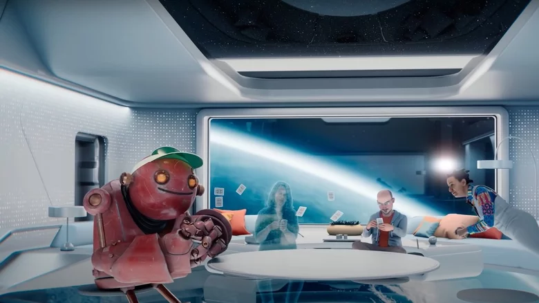

VR/AR Tech
The Biggest VR And AR Flops Of All Time
By Cassidy Ward
Sep 17, 2022 at 12:41 p.m. EDT

Is there any technology that has more persistently disappointed, while still maintaining public desire, than virtual reality? Our dogged pursuit of effective and immersive virtual and augmented reality, despite their many failures, is evidence of our endurance and willingness to overlook flaws when it comes to making cool stuff.
Even though so many attempts have been disappointing — and some of them have been very disappointing — we can't seem to let go of the dream of seamlessly stepping into a virtual world like the oasis from "Ready Player One," or the metaverse from "Snow Crash."
On second thought, maybe it's best we haven't succeeded in building those worlds. In any event, virtual and augmented reality appear to have finally gained some foothold despite not being precisely what we imagined. If we stick it out, there's some evidence it will eventually pay off. As explained by Strategy + Business, technologies like virtual and augmented reality typically only succeed after a long lead-up. Any overnight tech success was likely a decade or more in the making, and VR is no different. The near wins, and even the obvious losses, could provide the foundation on which truly immersive digital realities are built. We just have to endure the flops.
Vitual Boy
In the '90s, Nintendo was riding a wave of successive hits after the release of the NES, the Super NES, and the Game Boy. That success was certainly well earned, but might have given the company a little too much confidence. It was primed for a misstep.
At the same time, the popularity of virtual reality was cresting, and the two forces came together into a product that has a certain cult appreciation, but was nonetheless a failure: Nintendo's Virtual Boy. According to Fast Company, the Virtual Boy might have been much cooler than what we eventually got, if not for a series of adjustments during development and launch. Nintendo was treading into largely unmapped territory, and it didn't want to get sued. The Virtual Boy was basically a collection of compromises and half measures, molded into a box you could stick your face inside.
Consequently, the Virtual Boy sold only about 770,000 units in its lifetime (via Nintendo Life). That's compared to the tens of millions of units Nintendo was used to selling with its other consoles. Technological limitations also played into a failed launch. Graphics comprised entirely of red images on a black field just couldn't compete in a market obsessed with full color. While the Virtual Boy was objectively a complete game console flop, it was at least good enough that it's looked back on with fondness. It even got a Google Cardboard reprisal in 2016.
VR Movies
At the start of VR's modern peak, when people started to believe in the technology again, there was talk of VR shifting away from games and toward movies. It makes a certain amount of intuitive sense; they're both visual mediums, after all. And who wouldn't want to experience their favorite flicks in a more immersive way?
As explained by Scientific American, there have been some attempts to make VR movies work, but they have largely failed. Importantly, they didn't fail at being virtual reality, but they did fail at being movies. We probably should have seen it coming. Every time a movie or game is adapted to film, we have to reckon with the fact that different mediums cooperate with one another only against their will.
As it turns out, movies have particular conventions that don't necessarily lend themselves to VR. As Scientific American goes on to explain, movies work because a filmmaker can control our attention. They lay out story beats confident that viewers aren't going to miss them because they are literally on display. The ability to look around in 360 degrees at any given time threatens that sort of storytelling.
Some creators have taken a hybrid approach, displaying movies in VR as if they are playing on a massive movie theater screen. While it can be fun once or twice, the novelty wears off pretty soon, and it's not exactly the medium-shattering shift some promised.
Magic Leap
While virtual reality has more potential in the entertainment space, augmented reality might be the way most people in the future interface with virtual objects. The applications are broad, and the potential customer base is nearly limitless. Even people who aren't particularly interested in technology can see the benefits of having emails and other notifications delivered straight to your face.
Anyone who has played the AR mode in Pokémon Go has at least a passing familiarity with how it works. A wearable computer generates digital assets which are overlaid on top of the real world. You can interact with the virtual world, without being caged inside of it.
In 2019, Magic Leap was the bell of the ball when it came to AR
startups. It made big promises about seamlessly blending virtual reality
with actual reality. Their pitch must have been strong because they
collected billions in funding from companies like Google and Disney (via
Input). The company released impressive-looking advertising demos that
promised a product capable of generating interactive games and a virtual
workspace.
When the first headset finally launched, it was quickly made clear that the Leap's capabilities were a little more virtual than anyone understood. Not only did it underperform, but the $2,300 price tag boxed out most of the customer base. Any leap is a gamble, and this one didn't pay off.
Google Glass
Google Glass was supposed to bring workable augmented reality to the world. When it was unveiled in 2012, it seemed like the obvious next step in portable computing. Cell phones had given us access to communication and the internet everywhere we went, and it only made sense that the next step would be to integrate those technologies more fully.
In fairness to Google, Glass was crafted by the company's X Development division — previously Google X — a department in charge of its moonshot efforts. Those are projects that are understood to be long shots, but have incredible potential if they work. That suggests Google knew the projects had slim odds of working, but you wouldn't have known it from the advertising.
Unlike some other devices which were bulky and unwieldy, Glass was relatively streamlined and unintrusive. Video demos boasted a device that put almost all of the functionality of your smartphone directly in your retina in real-time. Users were promised the ability to receive and respond to messages, check the calendar and weather, get travel updates and directions, and much more. As explained by Investopedia, it appears that Google got swept up in its own hype
It didn't help that Glass was ultimately released in a sort of beta, in hopes of gaining crucial feedback from the public to improve the product. Even though Google was clear it was still essentially a prototype, $1,500 for an unfinished device didn't sit well.
Daqri
After a few moderate successes in the AR space, Daqri decided to pivot away from consumer-level products in favor of courting business customers. They intended to do that by developing the ultimate augmented reality hardware and software for factory and office workers.
The company pulled in roughly $300 million in funding, according to Protocol, and set to work building the AR headset of the future. The first product announcement in 2014 promised a hard hat intended for work in factory settings, equipped with an AR visor. The goal was to give workers access to useful information, laid on top of their actual workspace. Retailing for $15,000, the AR helmet just didn't capture market attention in the way the company hoped.
Later, the company shifted gears to a smaller headset aimed at other professionals that retailed for $4,995 (via The Verge). It wasn't any more popular than the helmet. Eventually, the company shuttered, having never really brought its products to fruition. We may see Daqri's tech rise from the ashes in some other form down the line; the company's assets, along with some of its employees, were acquired by Snap for a reported $34 million (via The Information).
HoloLens
Microsoft's HoloLens followed a similar trajectory as Google Glass, making big promises with impressive demonstrations that haven't yet manifested. When the technology was announced at a press conference in 2015, HoloLens seemed like it would change everything about the way we interface with technology.
Microsoft promised a wireless head-mounted computer capable of fully functional augmented reality mapped onto any room. Demonstrations included robots busting through the walls of your home, and browser or video windows that follow you as you navigate the world. Not to mention convenient virtual access to your notifications, calendar, and more. Nearly a decade after it was announced, HoloLens still isn't available in any meaningful way for consumers.
While HoloLens did reach market, it was targeted toward business customers and cost $3,000, a price tag that is too steep for most consumers (via Gizmodo). HoloLens 2 was even more expensive, and HoloLens 3 might not happen at all (via Digital Trends). Perhaps more importantly, focusing on business customers meant that developers for HoloLens were likewise largely constrained to business applications. It's unlikely the technology will really catch on until the economics of development and end-user purchase make more sense.
The Metaverse

While AR and VR technologies focus on the experience of an individual user, the logical endpoint of these technologies is a shared digital world where all of us can work and play. In 2021, Meta (formerly Facebook) announced the Metaverse, an immersive and collaborative virtual world. If Meta is to be believed, the Metaverse will someday be the place humanity spends a lot of its time. We'll go to our virtual offices, shop in virtual stores, and hang out with our virtual friends at virtual pubs (via Interesting Engineering).
They probably aren't wrong in concept, but this particular launch likely missed the mark. Time will tell. Still, this latest metaverse is only the most recent in a long line of similar products, each with varying degrees of success.
Active Worlds launched in 1995, allowing users to create their own virtual worlds to share with others. You can think of it almost like a Minecraft server, where you are responsible not just for populating the world, but also creating it. Today, several decades later, Active Worlds is still operational, but boasts only about 400 users at any given time.
Perhaps the most well-known metaverse, aside from Meta's, is Second Life, but even it is struggling. It launched in 2003 and nearly 60 million people have signed up. As of 2018, however, active monthly users were around half a million, down from a million five years earlier (via New World Notes).